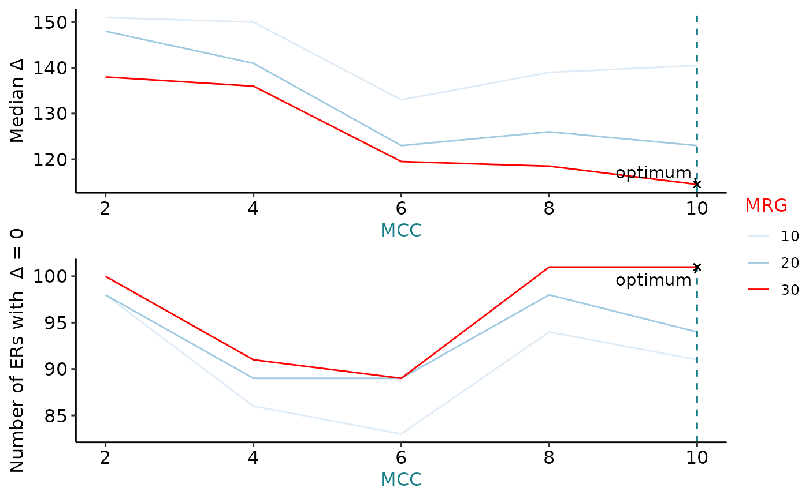

vignettes/ODER_overview.Rmd
ODER_overview.RmdODER
R is an open-source statistical environment which can be easily modified to enhance its functionality via packages. ODER is a R package available via the Bioconductor repository for packages. R can be installed on any operating system from CRAN after which you can install ODER by using the following commands in your R session:
if (!requireNamespace("BiocManager", quietly = TRUE)) {
install.packages("BiocManager")
}
BiocManager::install("eolagbaju/ODER")
## Check that you have a valid Bioconductor installation
BiocManager::valid()The expected input of ODER is coverage in the form of BigWig files as well as, depending on the functionalility required by a specific user, junctions in form of a RangedSummarizedExperiments.
ODER is based on many other packages and in particular in those that have implemented the infrastructure needed for dealing with RNA-seq data. The GenomicRanges package is heavily used in ODER while other packages like SummarizedExperiment and derfinder. Previous experience with these packages will help in the comprehension and use of ODER.
If you are asking yourself the question “Where do I start using Bioconductor?” you might be interested in this blog post. If you find the structure of a SummarizedExperiment unclear, you might consider checking out this manual.
As package developers, we try to explain clearly how to use our packages and in which order to use the functions. But R and Bioconductor have a steep learning curve so it is critical to learn where to ask for help. The blog post quoted above mentions some but we would like to highlight the Bioconductor support site as the main resource for getting help: remember to use the ODER tag and check the older posts. Other alternatives are available such as creating GitHub issues and tweeting. However, please note that if you want to receive help you should adhere to the posting guidelines. It is particularly critical that you provide a small reproducible example and your session information so package developers can track down the source of the error.
ODER
We hope that ODER will be useful for your research. Please use the following information to cite the package and the overall approach. Thank you!
## Citation info
citation("ODER")
#>
#> eolagbaju (2021). _Optimising the Definition of Expressed Regions_.
#> doi: 10.18129/B9.bioc.ODER (URL:
#> https://doi.org/10.18129/B9.bioc.ODER),
#> https://github.com/eolagbaju/ODER/ODER - R package version 0.99.18,
#> <URL: http://www.bioconductor.org/packages/ODER>.
#>
#> eolagbaju (2021). "Optimising the Definition of Expressed Regions."
#> _bioRxiv_. doi: 10.1101/TODO (URL: https://doi.org/10.1101/TODO), <URL:
#> https://www.biorxiv.org/content/10.1101/TODO>.
#>
#> To see these entries in BibTeX format, use 'print(<citation>,
#> bibtex=TRUE)', 'toBibtex(.)', or set
#> 'options(citation.bibtex.max=999)'.ODER is a packaged form of the method developed in the Zhang et al. 2020 publication: Incomplete annotation has a disproportionate impact on our understanding of Mendelian and complex neurogenetic disorders. The overarching aim of ODER is use RNA-sequencing data to define regions of unannotated expression (ERs) in the genome, optimise their definition, then link them to known genes.
ODER builds upon the method defined in derfinder by improving the definition of ERs in a few ways. Firstly, rather than being a fixed value, the coverage cut off is optimised based on a set of user-inputted, gold-standard exons for a given set of samples. Secondly, ODER introduces a second optimisation parameter, the max region gap, which determines the number of base-pairs of gap between which ERs are merged. Thirdly, ERs can be connected to known genes through junction reads. This aids the interpretation of ERs and also allows their definition to be refined further using the intersection between ERs and junctions. For more detailed methods, please see the methods section of the original publication.
Unannotated ERs can provide evidence for the existence and location of novel exons, which are yet to be added within reference annotation. Improving the completeness of reference annotation can aid the interpretation of genetic variation. For example, the output of ODER can help to better interpret non-coding genetics variants that are found in the genome of Mendelian disease patients, poetentially leading to improvements in diagnosis rates.
ODER
From the top-level ODER consists of 4 core functions, which are broken down internally into several smaller helper functions. These functions are expected to be run sequentially in the order presented below:
ODER() - Takes as input coverage in the form of BigWig files. Uses derfinder to call contigous blocks of expression that we term expressed regions or ERs. ER definitions are optimised across a pair of parameters the mean coverage cut-off (MCC) and the max region gap (MRG) with respect to a user-inputted set of gold standard exons. The set of ERs for the optimised MCC and MRG are returned.annotatER() - Takes as input the optimised set of ERs and a set of junctions. Finds overlaps between the ERs and junctions, thereby annotating ERs with the gene associated with it’s corresponding junction. Also categorises ERs into “exon”, “intron”, “intergenic” or any combination of these three categories depending on the ERs overlap with existing annotation.refine_ers() - Takes as input the optimised set of ERs annotated with junctions. Refines the ER definition based on the intersection between the ER and it’s overlapping junction.get_count_matrix() - Takes as input any set of GenomicRanges and a set of BigWig files. Returns a RangedSummarizedExperiment with assays containing the average coverage across each range. This function is intended to obtain the coverage across ERs to allow usage in downstream analyses such as differential expression.This is a basic example to show how you can use ODER. First, we need to download the example BigWig data required as input for ODER.
library("ODER")
library("magrittr")
# Download recount data in the form of BigWigs
gtex_metadata <- recount::all_metadata("gtex")
#> Setting options('download.file.method.GEOquery'='auto')
#> Setting options('GEOquery.inmemory.gpl'=FALSE)
#> 2021-09-20 14:52:05 downloading the metadata to /tmp/RtmpyHeTXA/metadata_clean_gtex.Rdata
gtex_metadata <- gtex_metadata %>%
as.data.frame() %>%
dplyr::filter(project == "SRP012682")
url <- recount::download_study(
project = "SRP012682",
type = "samples",
download = FALSE
)
# file_cache is an internal ODER function to cache files for
# faster repeated loading
bw_path <- file_cache(url[1])
bw_path
#> BFC1
#> "/github/home/.cache/R/BiocFileCache/81c223bc13b_SRR660824_SRS389722_SRX222703_male_lung.bw"To get the optimum set of ERs from a BigWig file we can use the ODER() function.This will obtain the optimally defined ERs by finding the combination of MCC and MRG parameters that gives the lowest exon delta between the ERs and the inputted gold-standard exons. The MCC is minimum read depth that a base pair needs to have to be considered expressed. The MRG is the maximum number of base pairs between reads that fall below the MCC before you would not include it as part of the expressed region. Internally, gold-standard exons are obtained by finding the non-overlapping exons from the inputted reference annotation.
In this example, we demonstrate ODER() on a single unstranded Bigwig. However, in reality, it is likely that you will want to optimise the ER definitions across multiple BigWigs. It is worth noting that the arguments bw_pos and bw_neg in ODER() allow for the input of stranded BigWigs.
# load reference annotation from Ensembl
gtf_url <- "http://ftp.ensembl.org/pub/release-103/gtf/homo_sapiens/Homo_sapiens.GRCh38.103.chr.gtf.gz"
gtf_path <- file_cache(gtf_url)
gtf_gr <- rtracklayer::import(gtf_path)
if (!xfun::is_windows()) { # As of rtracklayer 1.25.16, BigWig is not supported on Windows.
opt_ers <- ODER(
bw_paths = bw_path, auc_raw = gtex_metadata[["auc"]][1],
auc_target = 40e6 * 100, chrs = c("chr21"),
genome = "hg38", mccs = c(2, 4, 6, 8, 10), mrgs = c(10, 20, 30),
gtf = gtf_gr, ucsc_chr = TRUE, ignore.strand = TRUE,
exons_no_overlap = NULL, bw_chr = "chr"
)
}
#> Loading required package: BiocGenerics
#>
#> Attaching package: 'BiocGenerics'
#> The following objects are masked from 'package:stats':
#>
#> IQR, mad, sd, var, xtabs
#> The following objects are masked from 'package:base':
#>
#> anyDuplicated, append, as.data.frame, basename, cbind, colnames,
#> dirname, do.call, duplicated, eval, evalq, Filter, Find, get, grep,
#> grepl, intersect, is.unsorted, lapply, Map, mapply, match, mget,
#> order, paste, pmax, pmax.int, pmin, pmin.int, Position, rank,
#> rbind, Reduce, rownames, sapply, setdiff, sort, table, tapply,
#> union, unique, unsplit, which.max, which.min
#> Loading required package: S4Vectors
#> Loading required package: stats4
#>
#> Attaching package: 'S4Vectors'
#> The following objects are masked from 'package:base':
#>
#> expand.grid, I, unname
#> 2021-09-20 14:53:04 - Obtaining mean coverage across 1 samples
#> Warning in 1:seq_along(chr_info): numerical expression has 4 elements: only the
#> first used
#> 2021-09-20 14:53:04 - chr21
#> Warning in 1:seq_along(mccs): numerical expression has 5 elements: only the
#> first used
#> Warning in 1:seq_along(mrgs): numerical expression has 3 elements: only the
#> first used
#> 2021-09-20 14:53:05 - Generating ERs for chr21
#> Warning in 1:seq_along(mccs): numerical expression has 5 elements: only the
#> first used
#> Warning in 1:seq_along(mccs): numerical expression has 3 elements: only the
#> first used
#> Warning in 1:seq_along(mccs): numerical expression has 5 elements: only the
#> first used
#> Warning in 1:seq_along(mrgs): numerical expression has 3 elements: only the
#> first used
#> 2021-09-20 14:53:06 - Obtaining non-overlapping exons
#> 2021-09-20 14:53:10 - Calculating delta for ERs...
#> 2021-09-20 14:53:10 - Obtaining optimal set of ERs...Once we have the obtained the optimised set of ERs, we may consider plotting the exon delta across the various MCCs and MRGs. This can be useful to check the error associated with the definition of the set of optimised ERs. This error is measured through two metrics; the median exon delta and the number of ERs with exon delta equal to 0. The median exon delta represents the overall accuracy of all ER definitions, whereas the number of ERs with exon delta equal to 0 indicates the extent to which ER definitions precisely match overlapping gold-standard exon boundaries.
# visualise the spread of mccs and mrgs
if (!xfun::is_windows()) { # uses product of ODER
plot_ers(opt_ers[["deltas"]], opt_ers[["opt_mcc_mrg"]])
}
#> geom_path: Each group consists of only one observation. Do you need to adjust
#> the group aesthetic?
#> geom_path: Each group consists of only one observation. Do you need to adjust
#> the group aesthetic?
#> geom_path: Each group consists of only one observation. Do you need to adjust
#> the group aesthetic?
Next, we will use annotatERs() to find the overlap between the ERs and junctions. Furthermore, annotatERs() will also classify ERs by their overlap with existing reference annotation into the categories; “exon”, “intron” and “intergenic”. This can be helpful for two reasons. Primarily, junctions can be used to inform which gene the ER is associated to. This gene-level association can be useful multiple downstream applications, such as novel exon discovery. Furthermore, the category of ER, in terms of whether it overlaps a exonic, intronic or intergenic region, can help determine whether the ER represents novel expression. For example, ERs solely overlapping intronic or intergenic regions and associated with a gene can be the indication of the expression of an unannotated exon.
To note, it is recommended that the inputted junctions are derived from the same samples or tissue as the BigWig files used to define ERs.
# running only chr21 to reduce runtime
chrs_to_keep <- c("21")
# prepare the txdb object to create a genomic state
# based on https://support.bioconductor.org/p/93235/
hg38_chrominfo <- GenomeInfoDb::getChromInfoFromUCSC("hg38")
new_info <- hg38_chrominfo$size[match(
chrs_to_keep,
GenomeInfoDb::mapSeqlevels(hg38_chrominfo$chrom, "Ensembl")
)]
names(new_info) <- chrs_to_keep
gtf_gr_tx <- GenomeInfoDb::keepSeqlevels(gtf_gr,
chrs_to_keep,
pruning.mode = "tidy"
)
GenomeInfoDb::seqlengths(gtf_gr_tx) <- new_info
GenomeInfoDb::seqlevelsStyle(gtf_gr_tx) <- "UCSC"
GenomeInfoDb::genome(gtf_gr_tx) <- "hg38"
ucsc_txdb <- GenomicFeatures::makeTxDbFromGRanges(gtf_gr_tx)
#> Warning in .get_cds_IDX(mcols0$type, mcols0$phase): The "phase" metadata column contains non-NA values for features of type
#> stop_codon. This information was ignored.
genom_state <- derfinder::makeGenomicState(txdb = ucsc_txdb)
#> extendedMapSeqlevels: sequence names mapped from NCBI to UCSC for species homo_sapiens
#> 'select()' returned 1:1 mapping between keys and columns
# convert UCSC chrs format to Ensembl to match the ERs
ens_txdb <- ucsc_txdb
GenomeInfoDb::seqlevelsStyle(ens_txdb) <- "Ensembl"
# lung_junc_21_22 is an example data set of junctions
# obtained from recount3, derived from the lung tissue
# run annotatERs()
if (!xfun::is_windows()) { # uses product of ODER
annot_ers <- annotatERs(
opt_ers = head(opt_ers[["opt_ers"]], 100),
junc_data = lung_junc_21_22,
genom_state = genom_state,
gtf = gtf_gr,
txdb = ens_txdb
)
# print first 5 ERs
annot_ers[1:5]
}
#> [1] "2021-09-20 14:53:22 - Obtaining co-ordinates of annotated exons and junctions from gtf/gff3..."
#> [1] "2021-09-20 14:53:23 - Getting junction annotation using overlapping exons..."
#> [1] "2021-09-20 14:53:24 - Tidying junction annotation..."
#> [1] "2021-09-20 14:53:24 - Deriving junction categories..."
#> [1] "2021-09-20 14:53:25 - done!"
#> 2021-09-20 14:53:25 - Finding junctions overlapping ers...
#> 2021-09-20 14:53:27 - Annotating the Expressed regions...
#> 2021-09-20 14:53:27 annotateRegions: counting
#> 2021-09-20 14:53:28 annotateRegions: annotating
#> 2021-09-20 14:53:31 - done!
#> GRanges object with 5 ranges and 5 metadata columns:
#> seqnames ranges strand | grl genes
#> <Rle> <IRanges> <Rle> | <GRangesList> <character>
#> [1] chr21 5017261-5017336 * | ENSG00000279493
#> [2] chr21 5019250-5019325 * | ENSG00000279493
#> [3] chr21 5019449-5019524 * | ENSG00000279493
#> [4] chr21 5019756-5019790 * | ENSG00000279493
#> [5] chr21 5026314-5026389 * | ENSG00000277117
#> annotation og_index gene_source
#> <character> <integer> <character>
#> [1] intergenic 1 nearest gtf genes
#> [2] intergenic 2 nearest gtf genes
#> [3] intergenic 3 nearest gtf genes
#> [4] intergenic 4 nearest gtf genes
#> [5] exon 5 nearest gtf genes
#> -------
#> seqinfo: 1 sequence from an unspecified genome; no seqlengthsAfter we have annotated ERs with the overlapping junctions, optionally we can use refine_ers() to refine the starts and ends of the ERs based on the overlapping junctions. This will filter ERs for those which have either a single or two non-intersecting junctions overlapping. For the remaining ERs, refine_ers() will shave the ER definitions to the exon boundaries matching the overlapping junctions. This can be useful for downstream applications whereby the accuracy of the ER definition is extremely important. For example, the interpretion of variants in diagnostic setting.
if (!xfun::is_windows()) { # uses product of ODER
refined_ers <- refine_ERs(annot_ers)
refined_ers
}
#> 2021-09-20 14:53:32 - Refining the Expressed regions...
#> GRanges object with 2 ranges and 5 metadata columns:
#> seqnames ranges strand | grl genes
#> <Rle> <IRanges> <Rle> | <GRangesList> <character>
#> [1] chr21 5077869-5077885 * | chr21:5077737-5077868:- ENSG00000279687
#> [2] chr21 5093713-5093743 * | chr21:5093712-5093744:+ ENSG00000280071
#> annotation og_index gene_source
#> <character> <integer> <character>
#> [1] intron 56 nearest gtf genes
#> [2] intron 82 nearest gtf genes
#> -------
#> seqinfo: 1 sequence from an unspecified genome; no seqlengthsFinally, we can generate an ER count matrix with get_count_matrix(). This function can flexibly be run at any stage of the ODER pipeline and it requires a set of GenomicRanges and BigWig paths as input. get_count_matrix() will return a RangedSummarizedExperiment which has assays filled with the mean coverage across each inputted range. Internally, get_count_matrix() relies on megadepth to obtain coverage from BigWigs therefore megadepth::install_megadepth() must be executed at least once on the user’s system before get_count_matrix().
# create sample metadata containing identifiers for each BigWig
run <- gtex_metadata[["run"]][[1]]
col_info <- as.data.frame(run)
# install megadepth
megadepth::install_megadepth()
#> The latest megadepth version is 1.1.1
#> This is not an interactive session, therefore megadepth has been installed temporarily to
#> /tmp/RtmpyHeTXA/megadepth
if (!xfun::is_windows()) { # uses product of ODER
er_count_matrix <- get_count_matrix(
bw_paths = bw_path, annot_ers = annot_ers,
cols = col_info
)
er_count_matrix
}
#> Warning in is.na(.x): is.na() applied to non-(list or vector) of type 'S4'
#> class: RangedSummarizedExperiment
#> dim: 100 1
#> metadata(0):
#> assays(1): ''
#> rownames: NULL
#> rowData names(5): grl genes annotation og_index gene_source
#> colnames: NULL
#> colData names(1): runThe ODER package (eolagbaju, 2021) was made possible thanks to:
This package was developed using biocthis.
Code for creating the vignette
## Create the vignette
library("rmarkdown")
system.time(render("ODER.Rmd", "BiocStyle::html_document"))
## Extract the R code
library("knitr")
knit("ODER.Rmd", tangle = TRUE)Date the vignette was generated.
#> [1] "2021-09-20 14:53:38 UTC"Wallclock time spent generating the vignette.
#> Time difference of 1.802 minsR session information.
#> ─ Session info ───────────────────────────────────────────────────────────────────────────────────────────────────────
#> setting value
#> version R version 4.1.1 (2021-08-10)
#> os Ubuntu 20.04.3 LTS
#> system x86_64, linux-gnu
#> ui X11
#> language (EN)
#> collate en_US.UTF-8
#> ctype en_US.UTF-8
#> tz UTC
#> date 2021-09-20
#>
#> ─ Packages ───────────────────────────────────────────────────────────────────────────────────────────────────────────
#> package * version date lib source
#> abind 1.4-5 2016-07-21 [1] RSPM (R 4.1.0)
#> AnnotationDbi 1.55.1 2021-06-07 [1] Bioconductor
#> assertthat 0.2.1 2019-03-21 [1] RSPM (R 4.1.0)
#> backports 1.2.1 2020-12-09 [1] RSPM (R 4.1.0)
#> base64enc 0.1-3 2015-07-28 [1] RSPM (R 4.1.0)
#> basilisk 1.5.0 2021-05-19 [1] Bioconductor
#> basilisk.utils 1.5.0 2021-05-19 [1] Bioconductor
#> Biobase 2.53.0 2021-05-19 [1] Bioconductor
#> BiocFileCache 2.1.1 2021-06-23 [1] Bioconductor
#> BiocGenerics * 0.39.2 2021-08-18 [1] Bioconductor
#> BiocIO 1.3.0 2021-05-19 [1] Bioconductor
#> BiocManager 1.30.16 2021-06-15 [2] CRAN (R 4.1.1)
#> BiocParallel 1.27.8 2021-09-17 [1] Bioconductor
#> BiocStyle * 2.21.3 2021-06-16 [1] Bioconductor
#> biomaRt 2.49.4 2021-08-12 [1] Bioconductor
#> Biostrings 2.61.2 2021-08-04 [1] Bioconductor
#> bit 4.0.4 2020-08-04 [1] RSPM (R 4.1.0)
#> bit64 4.0.5 2020-08-30 [1] RSPM (R 4.1.0)
#> bitops 1.0-7 2021-04-24 [1] RSPM (R 4.1.0)
#> blob 1.2.2 2021-07-23 [1] RSPM (R 4.1.0)
#> bookdown 0.24 2021-09-02 [1] RSPM (R 4.1.0)
#> broom 0.7.9 2021-07-27 [1] RSPM (R 4.1.0)
#> BSgenome 1.61.0 2021-05-19 [1] Bioconductor
#> bslib 0.3.0 2021-09-02 [1] RSPM (R 4.1.0)
#> bumphunter 1.35.0 2021-05-19 [1] Bioconductor
#> cachem 1.0.6 2021-08-19 [2] RSPM (R 4.1.0)
#> car 3.0-11 2021-06-27 [1] RSPM (R 4.1.0)
#> carData 3.0-4 2020-05-22 [1] RSPM (R 4.1.0)
#> cellranger 1.1.0 2016-07-27 [1] RSPM (R 4.1.0)
#> checkmate 2.0.0 2020-02-06 [1] RSPM (R 4.1.0)
#> cli 3.0.1 2021-07-17 [2] RSPM (R 4.1.0)
#> cluster 2.1.2 2021-04-17 [3] CRAN (R 4.1.1)
#> cmdfun 1.0.2 2020-10-10 [1] RSPM (R 4.1.0)
#> codetools 0.2-18 2020-11-04 [3] CRAN (R 4.1.1)
#> colorspace 2.0-2 2021-06-24 [1] RSPM (R 4.1.0)
#> cowplot 1.1.1 2020-12-30 [1] RSPM (R 4.1.0)
#> crayon 1.4.1 2021-02-08 [2] RSPM (R 4.1.0)
#> curl 4.3.2 2021-06-23 [2] RSPM (R 4.1.0)
#> dasper 1.3.2 2021-08-12 [1] Bioconductor
#> data.table 1.14.0 2021-02-21 [1] RSPM (R 4.1.0)
#> DBI 1.1.1 2021-01-15 [1] RSPM (R 4.1.0)
#> dbplyr 2.1.1 2021-04-06 [1] RSPM (R 4.1.0)
#> DelayedArray 0.19.3 2021-09-12 [1] Bioconductor
#> derfinder 1.27.3 2021-09-15 [1] Bioconductor
#> derfinderHelper 1.27.1 2021-08-05 [1] Bioconductor
#> desc 1.3.0 2021-03-05 [2] RSPM (R 4.1.0)
#> digest 0.6.27 2020-10-24 [2] RSPM (R 4.1.0)
#> dir.expiry 1.1.0 2021-05-19 [1] Bioconductor
#> doRNG 1.8.2 2020-01-27 [1] RSPM (R 4.1.0)
#> downloader 0.4 2015-07-09 [1] RSPM (R 4.1.0)
#> dplyr 1.0.7 2021-06-18 [2] RSPM (R 4.1.0)
#> ellipsis 0.3.2 2021-04-29 [2] RSPM (R 4.1.0)
#> evaluate 0.14 2019-05-28 [2] RSPM (R 4.1.0)
#> fansi 0.5.0 2021-05-25 [2] RSPM (R 4.1.0)
#> farver 2.1.0 2021-02-28 [1] RSPM (R 4.1.0)
#> fastmap 1.1.0 2021-01-25 [2] RSPM (R 4.1.0)
#> filelock 1.0.2 2018-10-05 [1] RSPM (R 4.1.0)
#> forcats 0.5.1 2021-01-27 [1] RSPM (R 4.1.0)
#> foreach 1.5.1 2020-10-15 [1] RSPM (R 4.1.0)
#> foreign 0.8-81 2020-12-22 [3] CRAN (R 4.1.1)
#> Formula 1.2-4 2020-10-16 [1] RSPM (R 4.1.0)
#> fs 1.5.0 2020-07-31 [2] RSPM (R 4.1.0)
#> generics 0.1.0 2020-10-31 [2] RSPM (R 4.1.0)
#> GenomeInfoDb * 1.29.8 2021-09-05 [1] Bioconductor
#> GenomeInfoDbData 1.2.6 2021-07-30 [1] Bioconductor
#> GenomicAlignments 1.29.0 2021-05-19 [1] Bioconductor
#> GenomicFeatures 1.45.2 2021-08-26 [1] Bioconductor
#> GenomicFiles 1.29.0 2021-05-19 [1] Bioconductor
#> GenomicRanges 1.45.0 2021-05-19 [1] Bioconductor
#> GEOquery 2.61.0 2021-05-19 [1] Bioconductor
#> ggplot2 3.3.5 2021-06-25 [1] RSPM (R 4.1.0)
#> ggpubr 0.4.0 2020-06-27 [1] RSPM (R 4.1.0)
#> ggrepel 0.9.1 2021-01-15 [1] RSPM (R 4.1.0)
#> ggsignif 0.6.3 2021-09-09 [1] RSPM (R 4.1.0)
#> glue 1.4.2 2020-08-27 [2] RSPM (R 4.1.0)
#> gridExtra 2.3 2017-09-09 [1] RSPM (R 4.1.0)
#> gtable 0.3.0 2019-03-25 [1] RSPM (R 4.1.0)
#> haven 2.4.3 2021-08-04 [1] RSPM (R 4.1.0)
#> highr 0.9 2021-04-16 [2] RSPM (R 4.1.0)
#> Hmisc 4.5-0 2021-02-28 [1] RSPM (R 4.1.0)
#> hms 1.1.0 2021-05-17 [1] RSPM (R 4.1.0)
#> htmlTable 2.2.1 2021-05-18 [1] RSPM (R 4.1.0)
#> htmltools 0.5.2 2021-08-25 [1] RSPM (R 4.1.0)
#> htmlwidgets 1.5.4 2021-09-08 [1] RSPM (R 4.1.0)
#> httr 1.4.2 2020-07-20 [2] RSPM (R 4.1.0)
#> IRanges * 2.27.2 2021-08-18 [1] Bioconductor
#> iterators 1.0.13 2020-10-15 [1] RSPM (R 4.1.0)
#> jpeg 0.1-9 2021-07-24 [1] RSPM (R 4.1.0)
#> jquerylib 0.1.4 2021-04-26 [1] RSPM (R 4.1.0)
#> jsonlite 1.7.2 2020-12-09 [2] RSPM (R 4.1.0)
#> KEGGREST 1.33.0 2021-05-19 [1] Bioconductor
#> knitr 1.34 2021-09-09 [2] RSPM (R 4.1.0)
#> labeling 0.4.2 2020-10-20 [1] RSPM (R 4.1.0)
#> lattice 0.20-44 2021-05-02 [3] CRAN (R 4.1.1)
#> latticeExtra 0.6-29 2019-12-19 [1] RSPM (R 4.1.0)
#> lifecycle 1.0.0 2021-02-15 [2] RSPM (R 4.1.0)
#> limma 3.49.4 2021-08-08 [1] Bioconductor
#> locfit 1.5-9.4 2020-03-25 [1] RSPM (R 4.1.0)
#> lubridate 1.7.10 2021-02-26 [1] RSPM (R 4.1.0)
#> magrittr * 2.0.1 2020-11-17 [2] RSPM (R 4.1.0)
#> Matrix 1.3-4 2021-06-01 [3] CRAN (R 4.1.1)
#> MatrixGenerics 1.5.4 2021-08-26 [1] Bioconductor
#> matrixStats 0.60.1 2021-08-23 [1] RSPM (R 4.1.0)
#> megadepth 1.3.3 2021-09-10 [1] Bioconductor
#> memoise 2.0.0 2021-01-26 [2] RSPM (R 4.1.0)
#> munsell 0.5.0 2018-06-12 [1] RSPM (R 4.1.0)
#> nnet 7.3-16 2021-05-03 [3] CRAN (R 4.1.1)
#> ODER * 0.99.18 2021-09-20 [1] Bioconductor
#> openxlsx 4.2.4 2021-06-16 [1] RSPM (R 4.1.0)
#> pillar 1.6.2 2021-07-29 [2] RSPM (R 4.1.0)
#> pkgconfig 2.0.3 2019-09-22 [2] RSPM (R 4.1.0)
#> pkgdown 1.6.1.9001 2021-09-20 [1] Github (r-lib/pkgdown@85d8beb)
#> pkgload 1.2.2 2021-09-11 [2] RSPM (R 4.1.0)
#> plyr 1.8.6 2020-03-03 [1] RSPM (R 4.1.0)
#> png 0.1-7 2013-12-03 [1] RSPM (R 4.1.0)
#> prettyunits 1.1.1 2020-01-24 [2] RSPM (R 4.1.0)
#> progress 1.2.2 2019-05-16 [1] RSPM (R 4.1.0)
#> purrr 0.3.4 2020-04-17 [2] RSPM (R 4.1.0)
#> qvalue 2.25.0 2021-05-19 [1] Bioconductor
#> R6 2.5.1 2021-08-19 [2] RSPM (R 4.1.0)
#> ragg 1.1.3 2021-06-09 [1] RSPM (R 4.1.0)
#> rappdirs 0.3.3 2021-01-31 [2] RSPM (R 4.1.0)
#> RColorBrewer 1.1-2 2014-12-07 [1] RSPM (R 4.1.0)
#> Rcpp 1.0.7 2021-07-07 [1] RSPM (R 4.1.0)
#> RCurl 1.98-1.4 2021-08-17 [1] RSPM (R 4.1.0)
#> readr 2.0.1 2021-08-10 [1] RSPM (R 4.1.0)
#> readxl 1.3.1 2019-03-13 [1] RSPM (R 4.1.0)
#> recount 1.19.2 2021-08-11 [1] Bioconductor
#> RefManageR * 1.3.0 2020-11-13 [1] RSPM (R 4.1.0)
#> rentrez 1.2.3 2020-11-10 [1] RSPM (R 4.1.0)
#> reshape2 1.4.4 2020-04-09 [1] RSPM (R 4.1.0)
#> restfulr 0.0.13 2017-08-06 [1] RSPM (R 4.1.0)
#> reticulate 1.21 2021-09-14 [1] RSPM (R 4.1.1)
#> rio 0.5.27 2021-06-21 [1] RSPM (R 4.1.0)
#> rjson 0.2.20 2018-06-08 [1] RSPM (R 4.1.0)
#> rlang 0.4.11 2021-04-30 [2] RSPM (R 4.1.0)
#> rmarkdown 2.11 2021-09-14 [1] RSPM (R 4.1.1)
#> rngtools 1.5 2020-01-23 [1] RSPM (R 4.1.0)
#> rpart 4.1-15 2019-04-12 [3] CRAN (R 4.1.1)
#> rprojroot 2.0.2 2020-11-15 [2] RSPM (R 4.1.0)
#> Rsamtools 2.9.1 2021-06-17 [1] Bioconductor
#> RSQLite 2.2.8 2021-08-21 [1] RSPM (R 4.1.0)
#> rstatix 0.7.0 2021-02-13 [1] RSPM (R 4.1.0)
#> rstudioapi 0.13 2020-11-12 [2] RSPM (R 4.1.0)
#> rtracklayer 1.53.1 2021-08-13 [1] Bioconductor
#> S4Vectors * 0.31.3 2021-08-26 [1] Bioconductor
#> sass 0.4.0 2021-05-12 [1] RSPM (R 4.1.0)
#> scales 1.1.1 2020-05-11 [1] RSPM (R 4.1.0)
#> sessioninfo * 1.1.1 2018-11-05 [2] RSPM (R 4.1.0)
#> stringi 1.7.4 2021-08-25 [2] RSPM (R 4.1.0)
#> stringr 1.4.0 2019-02-10 [2] RSPM (R 4.1.0)
#> SummarizedExperiment 1.23.4 2021-08-25 [1] Bioconductor
#> survival 3.2-13 2021-08-24 [2] RSPM (R 4.1.0)
#> systemfonts 1.0.2 2021-05-11 [1] RSPM (R 4.1.0)
#> testthat 3.0.4 2021-07-01 [2] RSPM (R 4.1.0)
#> textshaping 0.3.5 2021-06-09 [1] RSPM (R 4.1.0)
#> tibble 3.1.4 2021-08-25 [2] RSPM (R 4.1.0)
#> tidyr 1.1.3 2021-03-03 [2] RSPM (R 4.1.0)
#> tidyselect 1.1.1 2021-04-30 [2] RSPM (R 4.1.0)
#> tzdb 0.1.2 2021-07-20 [1] RSPM (R 4.1.0)
#> utf8 1.2.2 2021-07-24 [2] RSPM (R 4.1.0)
#> VariantAnnotation 1.39.0 2021-05-19 [1] Bioconductor
#> vctrs 0.3.8 2021-04-29 [2] RSPM (R 4.1.0)
#> vroom 1.5.5 2021-09-14 [1] RSPM (R 4.1.1)
#> waldo 0.3.1 2021-09-14 [2] RSPM (R 4.1.1)
#> withr 2.4.2 2021-04-18 [2] RSPM (R 4.1.0)
#> xfun 0.26 2021-09-14 [2] RSPM (R 4.1.1)
#> XML 3.99-0.7 2021-08-17 [1] RSPM (R 4.1.0)
#> xml2 1.3.2 2020-04-23 [2] RSPM (R 4.1.0)
#> XVector 0.33.0 2021-05-19 [1] Bioconductor
#> yaml 2.2.1 2020-02-01 [2] RSPM (R 4.1.0)
#> zip 2.2.0 2021-05-31 [2] RSPM (R 4.1.0)
#> zlibbioc 1.39.0 2021-05-19 [1] Bioconductor
#>
#> [1] /__w/_temp/Library
#> [2] /usr/local/lib/R/site-library
#> [3] /usr/local/lib/R/library